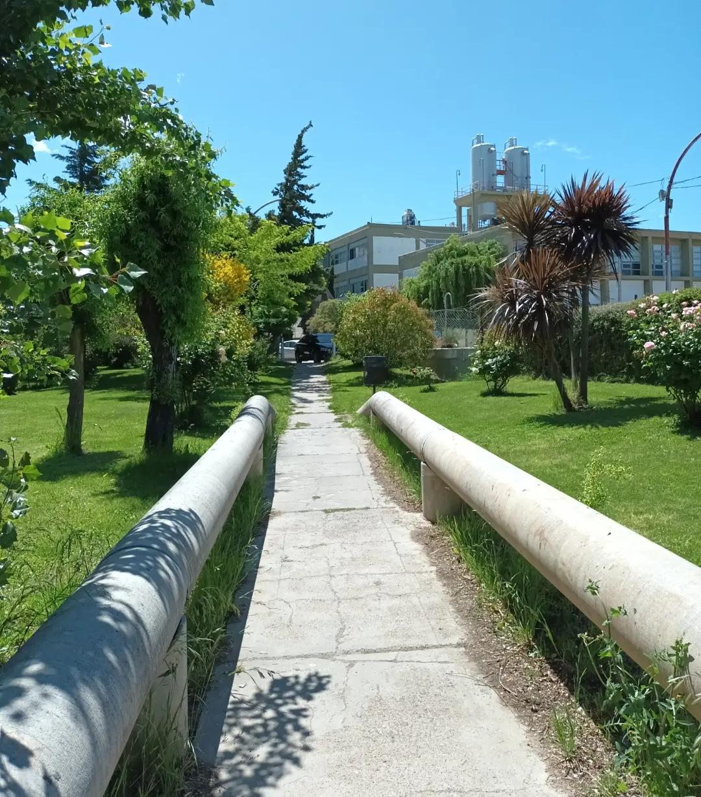
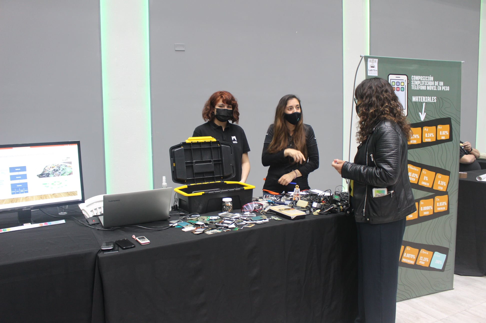
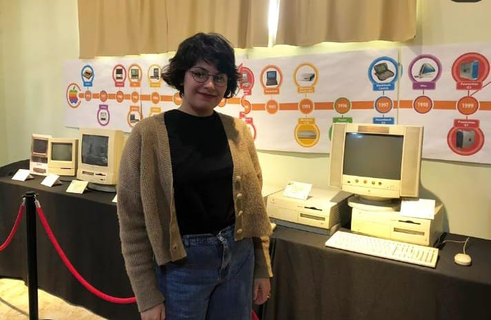
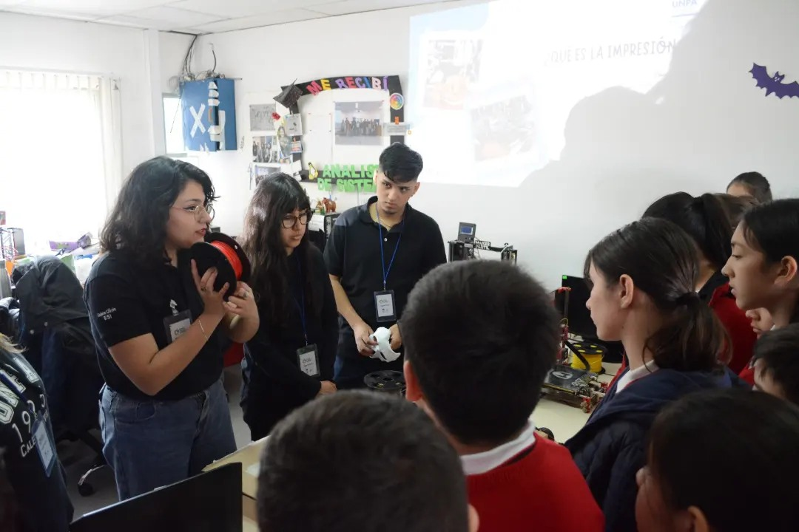
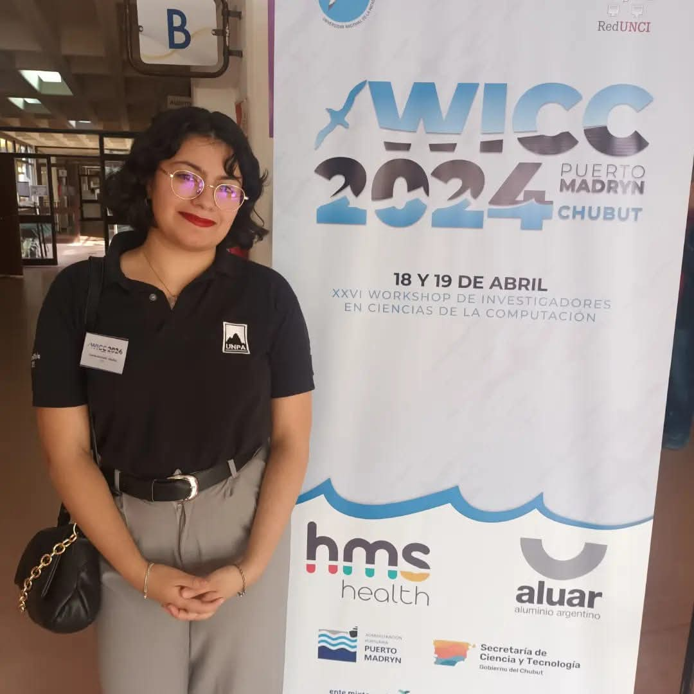
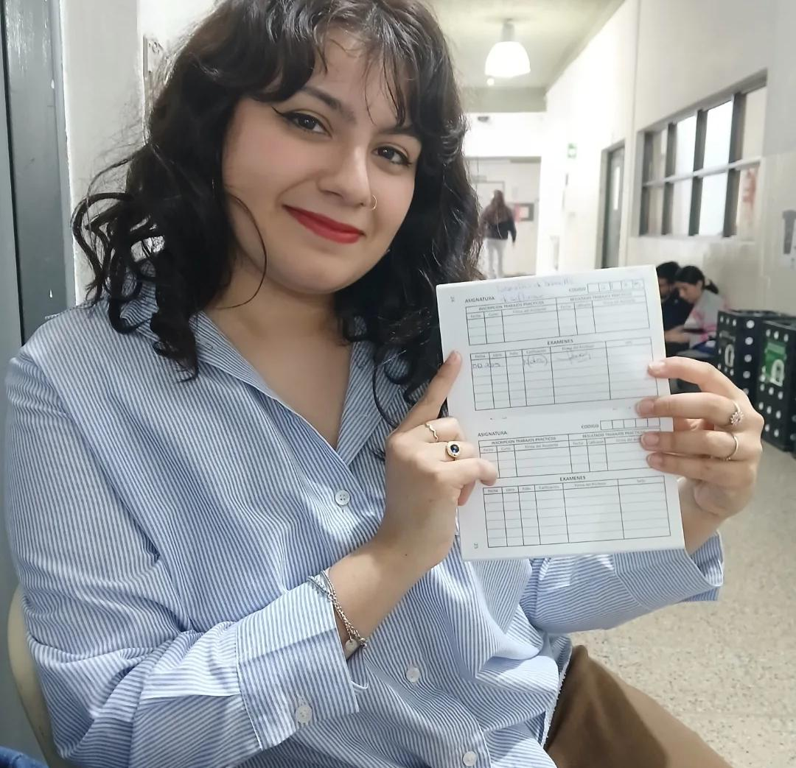
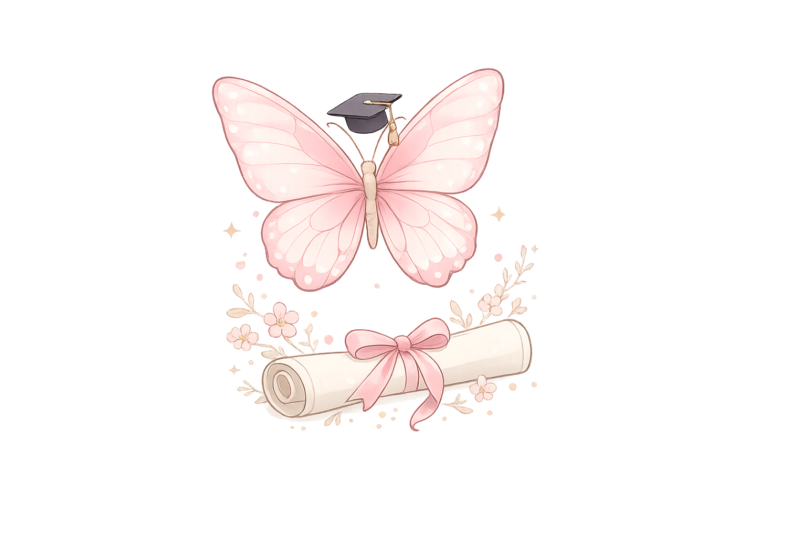

Un recorrido inolvidable...
Cada fotografía representa un momento muy especial de esta etapa. Gracias por acompañarme en este recorrido.

Primer día en la universidad. Todo comenzaba.

Mientras cursaba mi 2do año, comencé a trabajar en proyectos de investigación y extensión.

En mi tercer año conocí nuevas universidades participando de distintos eventos que complementaron mi formación académica.

Diserté en varios eventos y capacitaciones. Fui tutora de Resolución de problemas y Algoritmos por primera vez. Continué avanzado en la carrera.

Iba faltando menos para recibirme, fuí ayudante de cátedra y de investigación. Trabaje con algoritmos genéticos celulares y participé en mi primer congreso de investigación como autora.

Rendí el último laboratorio de la carrera, presenté mi aplicación. de identificación de plantas Flora Rebelde. Solo quedaban dos finales más.

Después de tantos años... ¡Finalmente Analista de Sistemas!